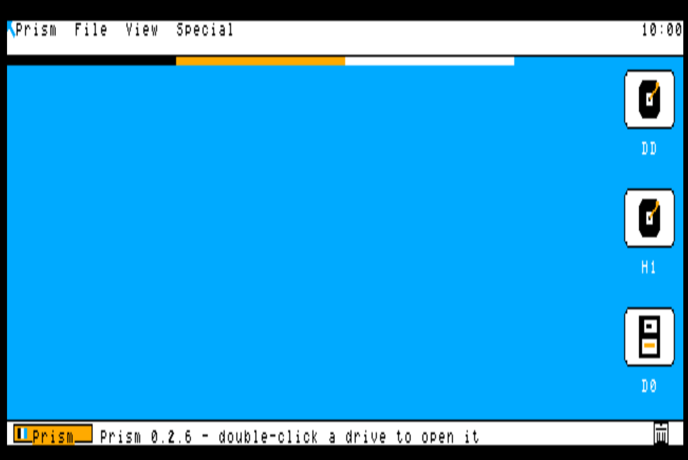
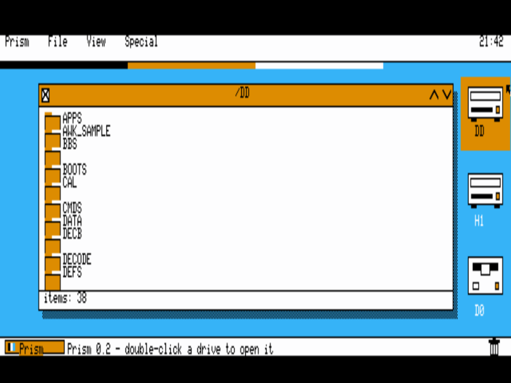
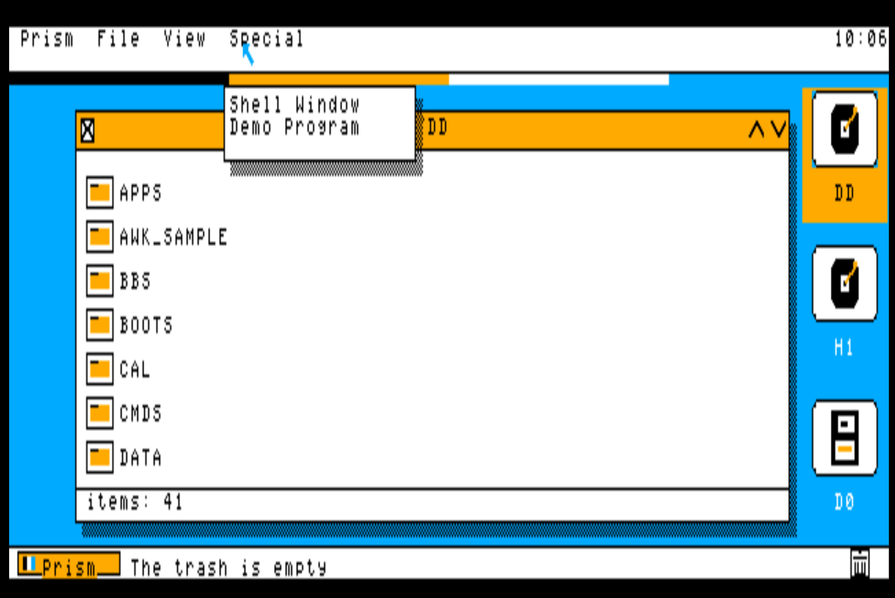
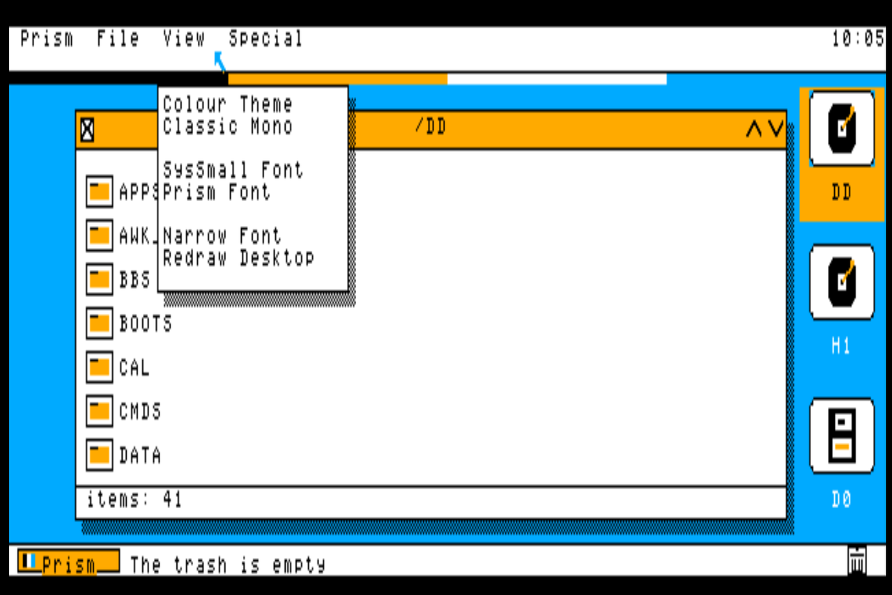
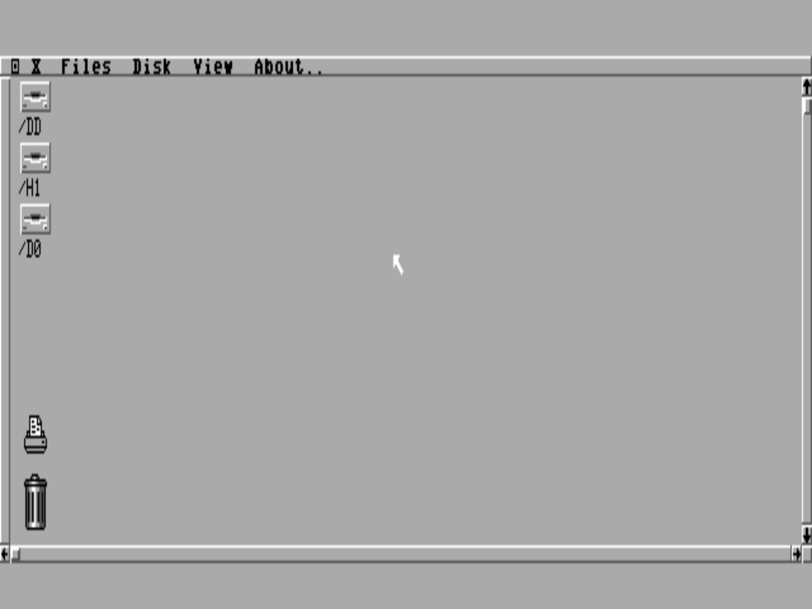

A Finder-style desktop shell for the TRS-80 Color Computer 3 — menu bar, drive icons, windows and a mouse — written natively for the CoCo 3 and running on NitrOS-9.
NitrOS-9 / EOUGIME hardware graphicsBuilt for the maxed CoCo 3 — full 2 MB · HD6309A native OS-9 programFree — a community gift

The Prism desktop — 640 × 200 on the CoCo 3’s GIME graphicsCurrent build · v0.2.6
01
What it is
Prism is a graphical desktop for a machine that shipped in 1986 with a command line. It gives the Color Computer 3 the kind of interface its hardware was always capable of: a menu bar, icons for your drives, windows that open onto real directories, and a mouse pointer to drive it all.
It began with an admiration. The polished graphical desktops of the CoCo 3’s era showed what a friendly machine could feel like — and the CoCo 3 had the hardware for that kind of interface all along: real graphics modes, a 64-colour palette and a proper multitasking operating system in NitrOS-9. What it never got was a desktop shell written in that spirit, for its own screen. Prism is that shell.
It is written from scratch in C, cross-compiled with modern tools and built directly against the NitrOS-9 windowing system, so it runs as a native OS-9 program — on top of the EOU (Ease of Use) distribution today, and on a real CoCo 3 as faithfully as in an emulator.
The project belongs to Keith Clark of Rodney, Ontario — a CoCo owner since the beginning, who came up through the CoCo 1 and 2 to the CoCo 3 and never really left. Prism is his tribute to the machine, and to the small, stubborn community that has kept it alive for forty years.
So it is being built the way community software should be: in the open, with original code, honest screenshots, and a release anyone can boot. When it is ready, it will simply be given away.
“So modern and pretty, people won't believe they're on a Color Computer 3.” — Keith, setting Prism's design bar — the brief the current build was polished to
“We're going to use every capability of this little baby.” — Keith, setting Prism’s design rule: the whole machine, all of it, all the time
02
The goal: one complete CoCo 3
Prism is bigger than a shell. It is the face of one complete CoCo 3 — a single machine being built in the open: NitrOS-9 EOU underneath, Prism on top, a growing suite of home-grown programs around it, and the entire preserved library of CoCo software within reach inside it.
“A complete CoCo 3 with all available software and our own programs.” — Keith, naming the project's goal, 4 November 2026
Prism does not stand alone. Its sibling programs are being written as one suite: the System Monitor, which watches the machine's processes, memory and drives (installed and running in the exhibit); the Orchestra-90 music player — four stereo voices through the Multi-Pak — which is built and on the test bench, its playback being perfected before it is called done; and the PSG sound test, three voices through the Multi-Pak's sound chip, played and verified by ear. Different programs, one family — the machine's own software, made here.
The next major piece is the Librarian: a Prism program to browse, search and launch the whole collection from inside the desktop. The library it indexes is the Color Computer Archive's — the community's preservation work, credited as theirs. A local copy of their SDC card image is in hand and verified (4 November 2026: 5,367 files, 5,282 disk images); the index is what we build. Status: in design — library in hand, index next.
The road from here
In order — and labelled honestly
Prism, finished — the shell's menu and directory work completed (under way now)
The Librarian — the whole Archive library, searchable from inside Prism (in design)
The full-RAM build — Prism rebuilt around the whole 2 MB, page-swapped (in design)
A window manager — overlapping, resizable Prism windows (on the roadmap)
The strategy game — a real-time strategy game for the CoCo 3, built on all of it (in design)
03
Features
Prism is under active development. This list is kept honest: what you can use today, in the current v0.2.6 build — and what is on the bench right now.
Working today
Verified in v0.2.6
Menu bar — Prism, File, View and Special menus, with pull-downs
Desktop drive icons — /DD, /H1 and /D0 down the right of the screen as modern badge-style tiles: disc platters for the hard drives, a floppy for /D0, in the current build's “Tiles” artwork
Double-click opening — double-click a drive icon and its window opens
Directory windows — open a drive and browse its real contents, with close box, scroll arrows and drop shadow
One-action Shut Down — a single pick ends the session and closes the machine down cleanly
Draggable windows — pick a window up by its title bar and put it where you want it
Program launching — run programs from a window instead of typing paths
The Prism button — a Start-style launcher, bottom-left, for programs, drives and settings
Menu-bar clock — hours and minutes at the right of the menu bar, redrawn once a minute so it costs nothing
Mouse pointer — full pointer control with click-to-select
A unique CoCo identity — Prism’s own chrome and finish: flat colours, a smaller interface font, polished to a professional standard
Two themes — the curated colour theme, and Classic Mono, switchable live from the View menu
Runs on NitrOS-9 EOU — install it in the CMDS directory and type prism
Hi-res screen — a 640 × 200 graphics desktop on the GIME, in four palette colours
Clean exit — quit straight back to the OS-9 shell prompt
In development
On the bench now
A self-booting release disk — one image that boots straight into Prism
The full 2 MB, page-swapped — Prism is being rebuilt around the GIME’s memory management: directory and icon caches, font caches and per-window backing stores held in 8K pages across the whole 2 MB and mapped in on demand, so everyday operations — opening drives, dragging and repainting windows — run from RAM instead of going back to disk
Designed for the maxed machine — the target is the full period dream setup: 2 MB of RAM, the HD6309, a Multi-Pak Interface and Orch-90 sound. In 1987 that stack cost a fortune and most owners never touched it; today an emulator hands it to everyone for free, so Prism builds for the machine at its best
04
Screenshots
Real screens from the running program, captured from the emulator — no mock-ups. These are current shots (v0.2.6, 6 November 2026): the “Tiles” build, with badge-style drive icons, flat colour and the smaller interface font.

v0.2.6A directory window on /DDThe EOU system drive’s real contents — opened with a double-click, in a window you can drag by its amber title bar.

v0.2.6The Special menuPrism’s program shelf: a shell window on Prism’s own screen, and the Demo Program — over the open /DD window.

v0.2.6The View menuTwo themes — the colour look, or Classic Mono — three interface fonts, and a desktop redraw, all switchable live.v0.2.6The colour themeSolid blue ground, white paper, black ink, amber accents — flat colours, badge-style tiles, and a status line that tells you what to do next.

The platformNitrOS-9 EOU, underneathPrism runs on the EOU distribution of NitrOS-9 — a complete, modern OS-9 system for the CoCo 3.
05
Requirements
Machine
Color Computer 3
A real CoCo 3, or an emulator that runs one faithfully.
Memory
512K or more
The standard EOU configuration; Prism itself is a small native program.
System
NitrOS-9 EOU
The Ease of Use distribution of NitrOS-9 Level 2 for the CoCo 3.
Input
Mouse or joystick
A CoCo mouse or joystick on the right controller port drives the pointer.
Prism is being developed and tested in MAME — on the HD6309 configuration with 2 MB of RAM — ahead of testing on the real hardware in storage. Every screenshot on this page is from that test rig.
06
Download
v0.2.1 · First public release — out now
Prism v0.2.1, ready to boot.
The first public release is on GitHub: the boot package — a floppy image that installs Prism to your EOU hard drive and boots straight into it, to the design worked out with Curtis Boyle of the EOU project — plus the Prism disk image and the full source code. Free, as promised.
The machine pictured on this page already runs the newer v0.2.6; a public release of the current build follows once its next polish pass (v0.2.7, in testing now) is installed and verified.